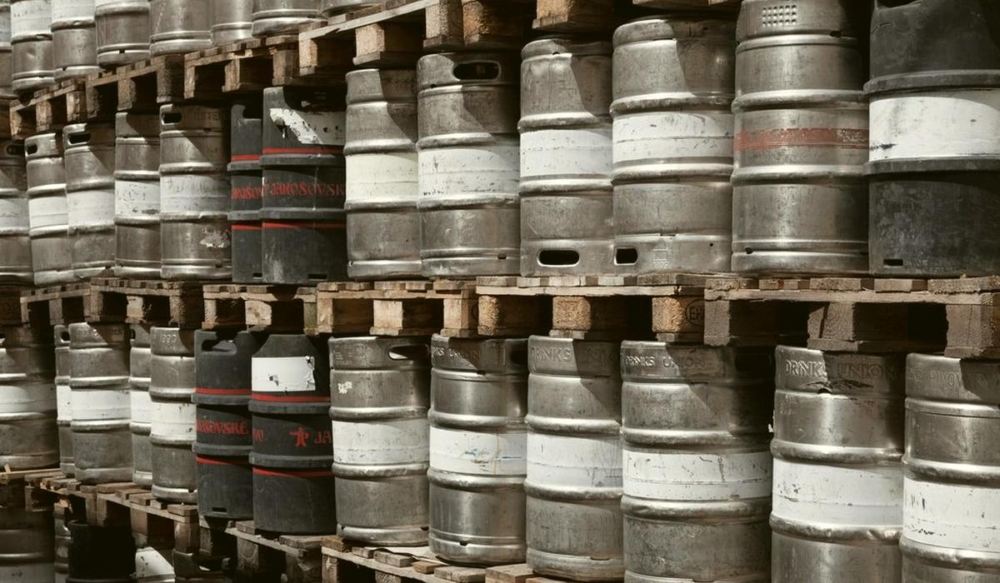

Rate of sale by region shows where a brand actually works
Volume by region mostly tells you where the brand is listed. Split volume into outlets and rate of sale and you see where drinkers choose it.

Why volume alone misleads
Put a brand's sales on a map and the big regions light up. That map mostly shows distribution: where the sales team got the brand listed, where the depot is close and where the distributor is strong. It says little about whether the beer suits the drinkers there.
For a marketing team deciding where to spend, the difference is everything. Spending to win drinkers where the brand already sells well per outlet is different from spending to push it into more outlets where it barely moves.
It matters on the production side too. A brand that is growing because it is gaining listings needs more beer in step with the sales team's wins. A brand that is growing because drinkers are choosing it more often needs more beer in the outlets it already has. The brewing plan and the depot stock look different in each case.
The split that answers the question
Volume = outlets stocking x rate of sale per outletRate of sale = volume / outlets stocking / weeks
Distribution % = outlets stocking the brand / outlets in the region selling the category x 100A region with a high rate of sale and low distribution is where the brand works and the trade has not caught up. A region with wide distribution and a low rate of sale is where the brand is on the shelf and drinkers walk past it.
- Volume by outlet, from depletions or secondary sales where you have them, not just shipments to depots.
- Outlets stocking from the outlet master or sales team records, by period.
- Category outlets in each region, from the sales team or licensing data.
- Price in each region, because brands in different states can carry very different shelf prices.
A worked example
Take a hypothetical lager over a 13-week quarter. In region North it sells 1,200 hL through 400 outlets. In region West it sells 600 hL through 150 outlets.
| Region | Volume (hL) | Outlets | hL per outlet per quarter | Litres per outlet per week |
|---|---|---|---|---|
| North | 1,200 | 400 | 3.0 | 23.1 |
| West | 600 | 150 | 4.0 | 30.8 |
North is twice the volume. West sells a third more per outlet every week. If West has 600 outlets selling the category, distribution there is 25 percent. Each new listing should sell at the West rate rather than the North one. The brand works in West. It is simply not on enough shelves yet.
The check before spending: is the West rate a few big outlets or many average ones? Sort outlets by rate of sale. If ten outlets carry half the volume, the brand works in those ten places, not in the region.
The traps
- Sell-in mistaken for sell-out. Shipments to a depot or distributor include pipeline fill. A launch region looks strong for a quarter, then goes quiet.
- Stock crossing boundaries. Beer billed in one region may be drunk in another. Use outlet-level data where you can.
- New outlets diluting the rate. Outlets listed late in the quarter sold for fewer weeks. Count outlet-weeks, not outlets.
- Price differences. A lower shelf price in one state can lift the rate of sale on its own. Read rate of sale with price beside it.
- Out-of-stock weeks. An outlet with no stock sells nothing. Weeks with zero sales and no stock are missing demand, not weak demand.
What good looks like
Good is one table per brand: region, distribution, rate of sale, price and the trend of each over four quarters. Marketing argues about where to spend from the same numbers sales use to plan listings.
Keep the rate of sale honest with a minimum base. A region with twelve outlets can post a spectacular number from one busy bar. Show the outlet count beside every rate and treat small bases the way you treat thin evidence anywhere else.
Beer365 reads sales, outlet and pricing data from your systems into one record, so where a brand works can be answered region by region with the outlets behind each number.
This article answers one of the supply chain, sales and marketing questions Beer365 is built for.
Keep reading
More on supply chain, sales and marketing
What consumer complaints are telling marketing about your beer
Complaint text is usually read by quality one case at a time. Read together, tagged and tied to pack age, it tells marketing where the brand experience is actually breaking.
Supply chain, sales and marketingForecasting beer demand by SKU and channel, with the lead time in mind
A beer forecast is only useful if it reaches further than your brewing lead time. Here is how to build one by SKU and channel and how to tell if it is any good.
Supply chain, sales and marketingAre you shipping the oldest beer first, or just the nearest pallet?
FEFO is a rule everyone signs up to and few warehouses can prove. Here is how to measure it from dispatch records and why the answer decides how fresh your beer is on the shelf.
Bring one week of brew sheets
We will show you where the beer went, on a call, before anyone signs anything.